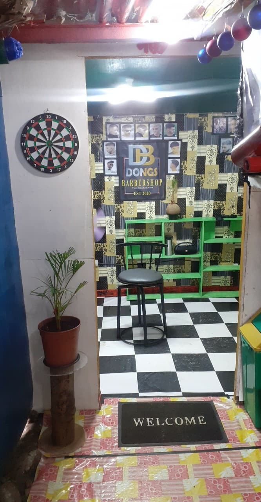

Collapsed content
Toggleable via the navbar brand.
Home
(current)
Offers
styles
About
ABOUT DONGS BARBERSHOP
DONGS BARBERSHOP started last September 11, 2020, located at Brgy. Valencia, Ormoc City, Leyte near Petron Gasonline Station. the shop owed by Jesse Cabudlay and Mark Anthony Andrino, when they started become friends, since Mr. Cabudlay knows how to cut hair and do salon, they planned to build a shop. This barbershop is the start of their career. Dongs Barbershope offred hair cut both male and female, hair rebond and hair color.
One of those important aspects is location. You could be doing everything right and still get a bad haircut. It’s entirely possible that you could go to get your hair cut, picture in hand, knowing what clipper sizes you want, and you could still walk out with a haircut that you don’t love.
If you’re going to a salon, that’s probably the case. Many guys go to salons or places with “clips” or “cuts” in the name. These places cater to a wide audience. Because of that, salon stylists are usually generalists, meaning they know a wide range of haircuts. This sounds good at first, but what you really want is a specialist. Instead of a stylist who is okay at a plethora of haircuts, you want someone who is excellent at a select few styles.

That’s where barbers come in. Barbers are specially trained to cut men’s hair. They know what men are looking for in a haircut and are familiar with the range of men’s styles. And going to a male barber is extremely helpful because he can relate to you. As a guy himself, your barber will draw upon his knowledge of men’s hair to help you decide what’s best for you.
Going to a barbershop is also about more than getting a first-rate cut. The experience of a barbershop is unlike any other. In a barbershop, you can relax and unwind in a pleasant, welcoming atmosphere, which is a far cry from the sterile environment of most salons.
So what you guyz waiting for? come visit and experience the services you deserve!!